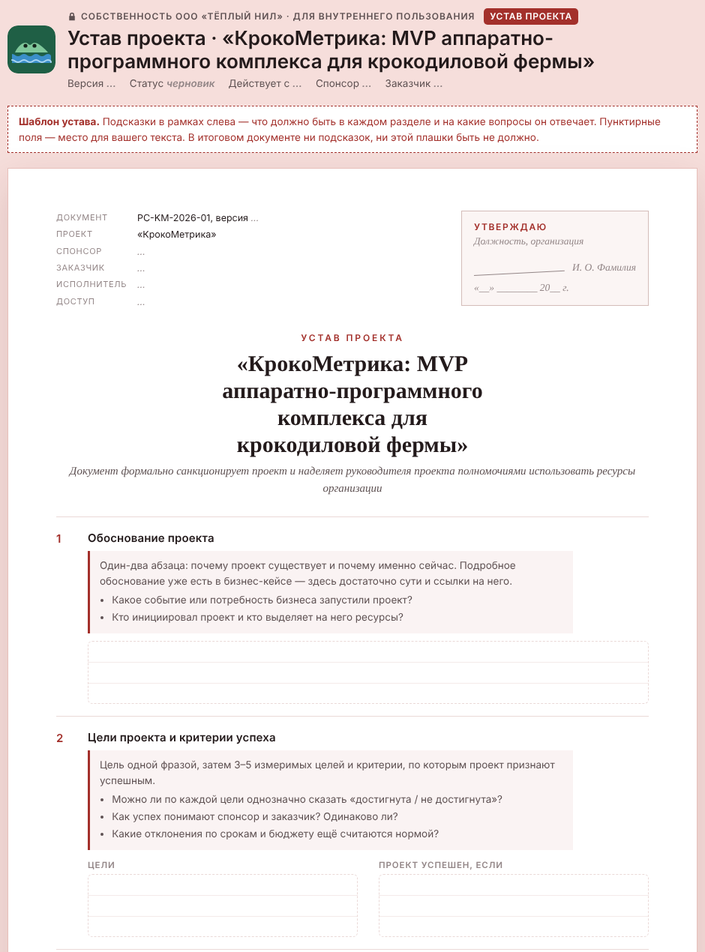
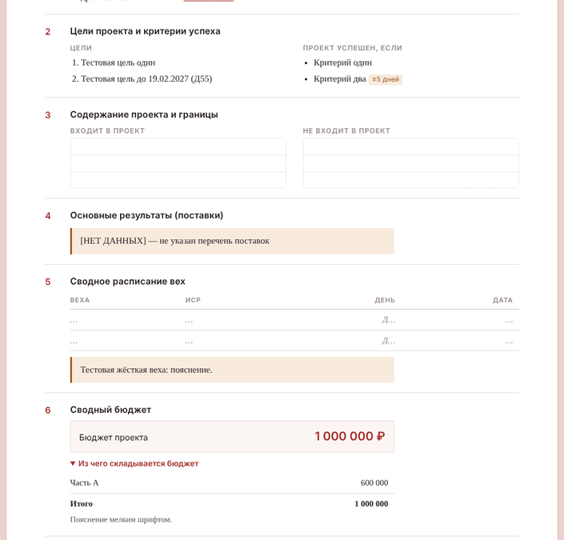

Как сделать страницу устава с помощью нейросети
Вы пишете устав проекта, а нейросеть упаковывает его в страницу портала: HTML-файл в оформлении, как у бизнес-кейса. Нейросеть может быть любой: Claude, ChatGPT, DeepSeek, GigaChat, Алиса.
ustav-фамилия.html
Срок: 15 ноября, 14:00 МСК включительно
Куда: инструкции у координатора курса
Скачайте шаблон страницы устава
Это та же страница, что на портале во вкладке «Устав», только в виде файла. В начале файла записана инструкция для нейросети: что можно менять, а что нельзя. Вам её править не нужно.


Напишите текст устава. Это главная часть задания
Изучите вводные: письмо, голосовое, рабочий чат, бизнес-кейс и план выгод. Запишите содержание устава обычным текстом в Word, Google Docs или заметках. Нейросеть можно использовать как собеседника, но за решения отвечаете вы. Ищите в материалах сроки, суммы, полномочия и противоречия между стейкхолдерами.
Вот заготовка по разделам шаблона. Скопируйте её и заполните:
УСТАВ ПРОЕКТА «КрокоМетрика» — черновик ШАПКА: версия, статус, действует с, спонсор, заказчик, исполнитель, доступ к документу, кто утверждает (должность, ФИО) 1. Обоснование проекта: 2. Цели (измеримые): Проект успешен, если: 3. Входит в проект: Не входит в проект: 4. Основные результаты (поставки): 5. Ключевые вехи (веха — день проекта Д… — почему её нельзя сдвинуть): 6. Бюджет: итоговая сумма, из чего складывается, где резервы и кто ими распоряжается: 7. Высокоуровневые требования: 8. Допущения: Ограничения: 9. Терминирующие риски: 10. Руководитель проекта и полномочия (кем назначен, финансовые полномочия, кто решает по изменениям, кто принимает работу, о чём и кому сообщать немедленно): 11. Ключевые стейкхолдеры (спонсор, заказчик, руководитель проекта): 12. Критерии завершения проекта:
Отдайте шаблон и текст нейросети
Откройте новый чат. Прикрепите файл ustav-template.html (скрепка или «+» рядом с полем ввода), вставьте промпт, а под ним свой текст устава:
Во вложении — шаблон страницы «Устав проекта» нашего корпоративного портала (файл ustav-template.html). В начале файла есть инструкция для тебя — выполни её точно. Ниже — текст моего устава по разделам. Перенеси его в шаблон и верни один полный HTML-файл. === ТЕКСТ УСТАВА === (вставьте сюда свой текст)
=== ТЕКСТ УСТАВА ===
УСТАВ ПРОЕКТА «КрокоМетрика» — черновик
1. Обоснование проекта: …
<!doctype html> <html lang="ru"> <head> …
Нейросеть не принимает файлы? Откройте ustav-template.html в Блокноте, скопируйте всё содержимое и вставьте в конец сообщения после строки === ШАБЛОН ===. В промпте замените «Во вложении» на «Ниже».
Обязательно прочитайте, что нейросеть написала после файла. Она перечислит поля, для которых не нашла данных, и противоречия, которые заметила. С ними нужно разобраться вам: вернитесь к вводным, допишите текст и попросите обновить страницу.
Сохраните результат в файл
| Что выдала нейросеть | Что делать |
|---|---|
| Файл или окно с готовой страницей и кнопкой «Скачать» | Скачайте и переименуйте в ustav-фамилия.html. |
| Код в окне чата | Нажмите «Копировать» над кодом и вставьте в Блокнот. Сохраните, как на картинке ниже. |
ustav-ivanov.html, кодировка «Юникод (UTF-8)». Если система спросит, какое расширение оставить, выберите .html.
Откройте файл в браузере и проверьте
Если что-то пошло не так
Ответ оборвался на середине
Напишите в том же чате:
Ответ оборвался. Продолжи ровно с того места, где остановился, без повторения начала.
Вставьте продолжение в Блокноте сразу после последней строки первой части. Если обрывается снова, начните новый чат и попросите формулировать короче. Или попробуйте другую нейросеть.
Нейросеть «улучшила» оформление: другие цвета, шрифты, нет меню
Ты изменил оформление. Верни блок <head>, тег <km-shell> и скрипты в конце точно как в шаблоне, удали все свои стили (<style> и style="…") и используй только классы из инструкции в шаблоне. Верни файл целиком.
В тексте появились факты, которых не было в моём черновике
В разделе … есть данные, которых нет в моём тексте: … Убери их. Где данных нет — поставь пометку [НЕТ ДАННЫХ]. Верни файл целиком.
В браузере вместо букв «кракозябры»
Файл сохранён не в UTF-8. Пересохраните его в Блокноте и выберите кодировку UTF-8.
Сдайте работу
Пришлите ответ до 15 ноября, 14:00 МСК включительно. Куда и как отправить, подскажет координатор курса. В ответе должны быть:
- файл
ustav-фамилия.html; - три пункта: что нейросеть сделала не так и что вы исправили. Пишите конкретно: «перепутала спонсора и заказчика, исправил по письму» — хорошо, «немного поправил текст» — нет.
После срока на портале появится устав, подготовленный тренером. Сравните его со своим.
Зачем страница, а не документ в Word
Портал проекта — это общее оформление (стили и меню) плюс отдельная страница на каждый документ. У каждого документа свой цвет: бизнес-документы зелёные, устав красноватый. Следующие документы — стейкхолдеры, коммуникации, риски — встанут в тот же портал рядом с вашим уставом.
Этот приём работает и на вашем реальном проекте. Сделайте один раз шаблон документа с инструкцией для нейросети, как в начале ustav-template.html. Дальше любой документ проекта за 15 минут превращается в аккуратную страницу в едином стиле.